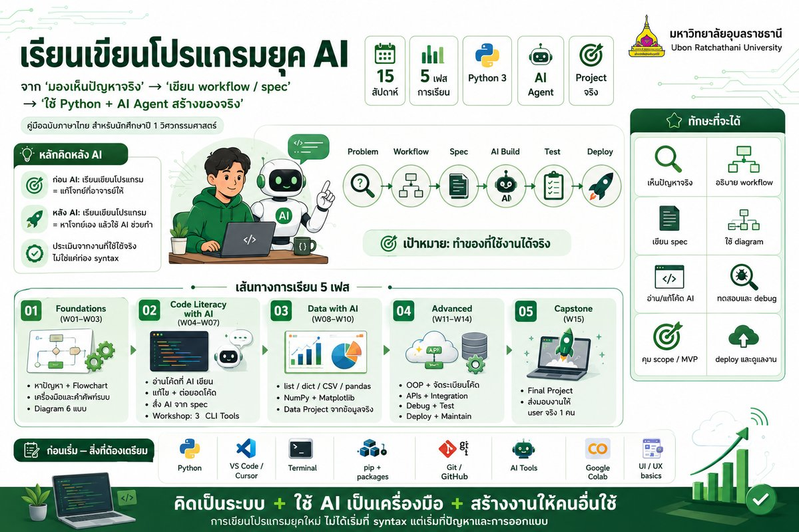

Year 1 · ENG · Computer Programming · 15 weeks
เรียนเขียนโปรแกรม
ยุค AI — ตั้งแต่ปัญหาจริง
คู่มือฉบับภาษาไทย ครอบคลุม 15 สัปดาห์ สำหรับนักศึกษาปี 1 วิศวกรรมศาสตร์
— เริ่มจาก "การมองเห็นปัญหาจริง" ก่อนเขียนโค้ดสักบรรทัด แล้วใช้ Python
+ AI เป็นเครื่องมือสร้างของจริงที่ใช้งานได้ — ไม่ใช่แค่ทำการบ้าน
📦 15 สัปดาห์ · 3 เฟส
🐍 Python 3 เป็นภาษาหลัก
🤖 ทำงานคู่ AI Agent
🎓 จบด้วย Project จริง

📋 ภาพสรุปหลักสูตร 15 สัปดาห์ในรูปเดียว — คลิกเพื่อดูขนาดใหญ่
หลักคิดของคู่มือนี้
ก่อน AI — เรียนเขียนโปรแกรม คือเรียน "แก้โจทย์ที่อาจารย์ให้"
หลัง AI — เรียนเขียนโปรแกรม คือเรียน "หาโจทย์เอง แล้วสั่งให้ AI ช่วยทำ"
คู่มือนี้ไม่ได้สอน Python syntax ตามตำราเดิม แล้วค่อยพูดถึง AI ตอนท้าย
— แต่ เริ่มจากพื้นฐานยุค AI ก่อน (สังเกตปัญหา · เขียน Diagram · เลือกเครื่องมือ)
แล้วจึงเรียน Python เป็นเครื่องมือสำหรับทำสิ่งที่อยากทำให้สำเร็จ
เป้าหมายเมื่อจบ 15 สัปดาห์
นักศึกษาต้องสามารถ — มองเห็นปัญหา → อธิบายเป็น workflow → เขียน spec → สั่ง AI ช่วยสร้างต้นแบบ
→ ทดสอบของจริง → ปรับแก้ → ส่งมอบใช้งานได้กับเพื่อน 1 คน
เฟส 1 · พื้นฐานก่อนเขียนโค้ด (W01–W03)
3 สัปดาห์แรกไม่มีการเขียน Python — เป็นพื้นฐานที่ยุค AI ขาดไม่ได้
W01 · Foundations
หาปัญหา + Flowchart
แยก symptom vs root problem, สังเกตงานในห้อง lab/บ้าน,
เขียน Flowchart ของ process จริง — เริ่ม "ก่อนที่จะคิดถึงโค้ด"
Problem-finding
Flowchart
Spec
W02 · Foundations
เครื่องมือ + คำศัพท์ระบบ
รู้จัก เครื่องมือยุค AI (Cursor, Claude, GitHub, Cloud Run, …)
และ คำศัพท์ระบบ (User, API, Server, Database, …) — เพื่อสั่ง AI ให้แม่นยำ
Tool literacy
Vocabulary
W03 · Foundations
Diagram 6 แบบ
Flowchart, Sequence, C4, State machine, ER, Block — AI อ่าน diagram ได้ดีกว่าคำพูดคลุมเครือ
มาก เรียนเขียน 6 แบบให้ใช้งานได้จริง
C4
Sequence
State
ER
เฟส 2 · Code Literacy with AI (W04–W07)
ไม่สอน Python syntax ทีละหัวข้อแบบเดิม — แต่ใช้ AI เป็น คู่หูฝึก
เริ่มจาก อ่านโค้ดที่ AI เขียน ให้เข้าใจ → แก้ไข →
สั่งงาน AI ครอบคลุม print/input/if/for/def ในเฟสเดียว
เฟส 3 · Data with AI (W08–W10)
3 สัปดาห์ทำงานกับ ข้อมูลจริง — รวม list/dict/CSV/pandas เป็นเรื่องเดียว, NumPy + plot, แล้วทำ Data Project
เฟส 4 · Advanced (W11–W14)
4 สัปดาห์ก้าวข้าม "scripts" — สู่ "ระบบจริง" ที่มีโครงสร้าง, ติดต่อโลกภายนอก, ทดสอบได้, และ deploy ได้
W11 · Advanced
OOP + จัดระเบียบโค้ด
class, method, module — และที่สำคัญกว่า "เมื่อไหร่ใช้ / เมื่อไหร่ไม่ใช้"
OOP เพราะ AI ชอบ over-engineer
class
modules
when-not-to
W12 · Advanced
APIs + Integration
requests, Google Sheets API, LINE Messaging API, Flask/Streamlit
เล็ก ๆ — ทำให้ Python "คุยกับโลกภายนอก"
requests
Sheets
LINE
Flask
W13 · Advanced
Debug + Test + Reality
อ่าน stack trace, เขียน assert + pytest,
จับ "AI hallucination", และเหตุผลว่า "works on my machine ≠ ใช้งานได้"
debug
pytest
hallucination
W14 · Advanced
Deploy + Maintain
Git/GitHub พื้นฐาน, deploy แอป Streamlit/Flask ขึ้น Cloud,
version, rollback, change-log — ของจริงต้องบำรุงรักษาได้
git
cloud
maintain
เฟส 5 · Capstone (W15)
1 สัปดาห์ส่งมอบ ของจริง ให้ user จริง 1 คน — รวมทุกทักษะตั้งแต่ W01
ทักษะ 12 อย่างที่จะได้ (ตาม Mainidea)
The new foundation stack — สิ่งที่ "coding ยังอยู่ข้างใน แต่ไม่ใช่ศูนย์กลางอีกต่อไป"
FDN 1
เห็นปัญหาจริง
แยก symptom vs root, สังเกตงานซ้ำ, ใครเดือดร้อน, ถ้าไม่แก้จะเป็นอะไร
FDN 2
อธิบาย Workflow
เขียน flowchart ของ process ปัจจุบัน vs ที่อยากให้เป็น
FDN 3
เข้าใจข้อมูล
record, field, key, ความสัมพันธ์ — ก่อนเขียน database
FDN 4
เข้าใจระบบ
user, server, API, frontend, backend, queue — คำศัพท์ที่ AI ใช้ได้
FDN 5
ใช้ Diagram
Flowchart · Sequence · C4 · State · ER · Block
FDN 6
รู้จักเครื่องมือ
รู้ว่ามีอะไรให้ใช้ได้บ้าง และที่สำคัญ — "อะไรที่เราไม่มี"
FDN 7
สั่ง AI ให้ชัด
ขอแผนก่อน · บอกข้อจำกัด · ขอให้วิจารณ์งานตัวเอง · จับ hallucination
FDN 8
ทดสอบของจริง
manual + automated, edge case, failure path — "ทดสอบก่อนเชื่อ AI"
FDN 9
Debug พฤติกรรม
ไม่ใช่แค่ syntax — debug ระดับระบบและข้อมูล
FDN 10
คุม Scope
MVP, non-goals, "ยังไม่ต้องทำ", "ใช้ spreadsheet ก่อนพอ"
FDN 11
เขียนเอกสาร
README, spec, test plan, changelog — เป็น control layer ของ AI
FDN 12
บำรุงรักษา
version, rollback, ไม่เปลี่ยนหลายอย่างพร้อมกัน
ก่อนเริ่ม — สิ่งที่ต้องเตรียม
🚀 Setup — ทำครั้งเดียว ใช้ทั้งคอร์ส
กดเข้าแต่ละหน้าเพื่อทำตามขั้นตอน · เริ่มจาก "ต้องมี" (สีน้ำเงิน) ก่อนไปต่อ · "เสริม" (สีเหลือง/เขียว) ทำตามจำเป็น
Core · 10 นาที
🐍 ติดตั้ง Python
ดาวน์โหลดจาก python.org · ติด Add to PATH · verify ด้วย
python --version · troubleshoot ครบทุกปัญหาที่เจอบ่อย
Windows
Mac
step-by-step
Core · 10 นาที
💻 VS Code / Cursor
เลือก editor — VS Code (ฟรี) หรือ Cursor (มี AI ในตัว) · ลง Python extension ·
shortcut cheat-sheet · ปัญหาที่พบบ่อย
VS Code
Cursor
shortcuts
Core · 10 นาที
🖥️ Terminal พื้นฐาน
PowerShell / Terminal — cd, ls/dir, pwd,
run python file.py · shortcut + troubleshoot
PowerShell
cd / ls
Core · 10 นาที
📦 pip + Packages
ลง package เสริม (pandas, numpy, flask) · requirements.txt ·
virtual environment (venv) · troubleshoot
pip install
venv
Core · 15 นาที
🌿 Git + GitHub
ลง Git · สร้าง GitHub account · workflow แรก (init/add/commit/push) ·
.gitignore · ใช้ตั้งแต่ W04 จนถึง Final Project
git
GitHub
version
Core · 10 นาที
🤖 AI Accounts
Claude / ChatGPT / Cursor / Gemini · เปรียบเทียบ · เลือกอันที่เหมาะ ·
5 prompt templates · GitHub Copilot ฟรีสำหรับนักศึกษา
Claude
ChatGPT
prompts
เสริม · ทางเลือก
☁️ Google Colab
ทางเลือกถ้าลง Python ไม่ได้ (Chromebook / iPad / ไม่มี admin) · เปิดเบราว์เซอร์รัน Python ได้เลย ·
เหมาะกับ W08–W10 (ทำ data + plot)
no-install
Jupyter
data
Reference · เปิดทิ้งไว้
📖 Python Cheat-sheet
syntax พื้นฐานทั้งหมด · variables, operators, list, dict, def, try/except ·
ทุก example รันได้ในเบราว์เซอร์ · ลืม syntax ไหน → ค้นที่นี่
runnable
quick-ref
Reference · ใช้ตอน W12+
📐 UX/UI Principles
เลือก UI tech ให้ตรงงาน (Tkinter / Streamlit / Flask / Bot) · 5 states ที่ AI ลืม · forms · tables ·
mobile · AI-era traps · checklist ก่อนส่งงาน
judge AI UI
W12 / W14 / W15
อื่น ๆ ที่ใช้ตอนหลัง
- เครื่องคำนวณ + ปากกา + กระดาษ — ใช้สำหรับ W01–W03 (Flowchart + Diagram ด้วยมือก่อน)
- Google Drive — เก็บไฟล์ + ใช้กับ Colab (W08–W10)
- (W14+) Cloud Run / Streamlit Cloud account สำหรับ deploy (จะแนะนำตอนนั้น)
ความรู้พื้นฐานที่ต้องมี
| ระดับ | รายการ | ทำไมต้องมี |
|---|
| ต้องมี | ใช้ Windows / Mac ได้คล่อง | เปิด terminal, จัดการไฟล์, แตก zip |
| ต้องมี | พิมพ์ภาษาอังกฤษได้ | code + error message + prompt ส่วนใหญ่เป็นอังกฤษ |
| ดี | เคยใช้ Google Sheets / Excel | W09 / W12 ใช้แนวคิดตารางเหมือนกัน |
| ดี | เคยใช้ ChatGPT / Gemini มาก่อน | W14 จะลงลึก แต่เริ่มเร็วขึ้นถ้าคุ้นเคย |
| ไม่จำเป็น | เคยเขียนโปรแกรมมาก่อน | คู่มือเริ่มจากศูนย์ |
เคล็ดลับสำหรับผู้เริ่มต้น
อย่ารีบกระโดดเข้า W04 (Python) ถ้ายังไม่ทำ W01–W03 — การไม่มีพื้นฐานยุค AI จะทำให้เขียนได้แค่
"toy app" ตามคำสั่ง AI ที่ไม่ชัดเจน · ลงทุน 3 สัปดาห์แรกอย่างเต็มที่
คู่มือนี้สร้างมาจาก
Mainidea ของผู้สอน + เอกสารประกอบการสอนเดิม
วิชา Computer Programming
(Topic 1–11: Flowchart, Python, Output, Input, Conditions, Repetition, Functions, NumPy, OOP/Matplotlib, Pandas, GenAI)
ของภาควิชาวิศวกรรมเครื่องกลและเมคาทรอนิกส์ คณะวิศวกรรมศาสตร์ มหาวิทยาลัยอุบลราชธานี
ดู Slide เดิมทั้งหมดได้ที่
หน้าเอกสารอ้างอิง
การใช้คู่มือนี้
คู่มือเป็นเว็บไซต์ static — ไม่ต้องติดตั้งอะไร เพียงเปิด index.html
ด้วยเบราว์เซอร์ใดก็ได้ ทุกหน้ามี checklist ที่บันทึก progress ใน localStorage
ของเบราว์เซอร์ (เห็นแถบล่างขวา) — เคลียร์ได้ที่ปุ่ม "รีเซ็ต"